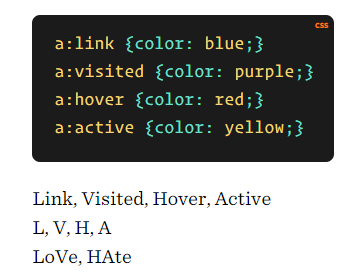
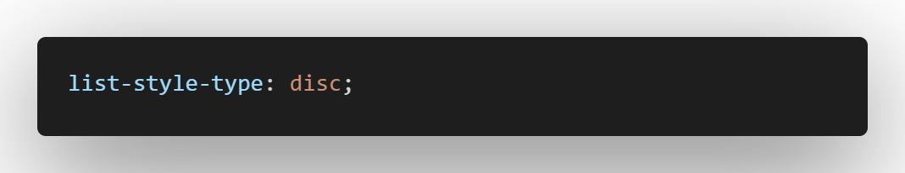
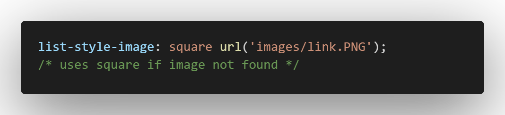

Styling LINKS & LISTS
-> Links have one additionl property (text-decoration)
-> don't use links as buttons. use <button> element.
-> Links have states (blue purple, etc..)
| a:link |
normal, unvisited link |
| a:visited |
has been visited |
| a:hover |
activated by mouse |
| a:active |
is being clicked |
| a:focus |
activated by keyboard(tab) |
Link Pseudo-classes order:

Styling LISTS
- list-style-type
- list-style-image
- list-style-position
- list-style
List-style-type:
- override default marker with numbers, squares, circles etc..
- Values: lower-roman
upper-roman
decimal
decimal-leading-zero
upper-alpha
lower-alpha
herbrew
armenian etc..

List-style-image:
- use custom image instead of traditional marker.

CSS3 GENERATOR